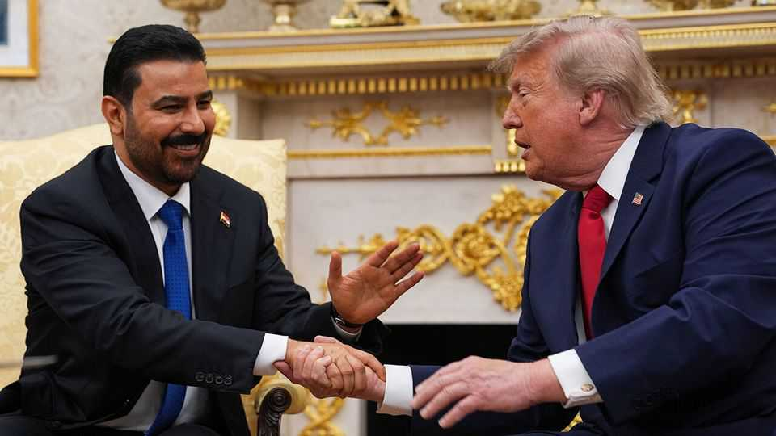

America’s other battle with Iran
The two countries are vying for influence in Iraq
July 16th 2026

WHILE AMERICA and Iran battle for control of the Strait of Hormuz, another contest between the two is unfolding on land in Iraq. On paper, America appears to have the upper hand. Iraq’s new prime minister, Ali al-Zaidi, chose Washington for his first foreign trip, ahead of Iran. Unlike previous Shia prime ministers, Mr Zaidi is no Islamist, but a businessman with no previous political experience who grew rich from government contracts. He arrived in Washington on July 13th with promises to disarm Iran-backed militias in Iraq and stem the flow of Iraqi dollars into Iran. He also brought a large business delegation offering a raft of prospective deals.
Mr Zaidi seems to have struck the right tone. After their meeting (pictured) on July 14th, Donald Trump lauded their “tremendous chemistry” and predicted Mr Zaidi would make “a great leader in the Middle East”. Yet the new prime minister will probably not reduce Iran’s influence in Iraq by as much as America is hoping.
True, Mr Zaidi has reason to stay in America’s good books. He got his job after America, in effect, vetoed the return of Nuri al-Maliki, a former prime minister who is close to Iran, by threatening sanctions if Iraq’s power brokers put Mr Maliki back in office. The American president invited Mr Zaidi to Washington in April, before he had picked his cabinet, saying he hoped he would “form a new government free from terrorism.”
Mr Zaidi relies on oil money, already much reduced because of fighting around Hormuz, to pay the salaries of employees in Iraq’s bloated public sector, who could otherwise turn on the government. Under UN arrangements, Iraq’s oil revenues pass through New York, leaving them vulnerable to American sanctions if Mr Zaidi fails to do Mr Trump’s bidding. He also has a personal interest in keeping Mr Trump onside. His bank, Al Janoob Islamic Bank, is one of several America has barred from trading in foreign currencies. Mr Trump has relaxed the restrictions, but has yet to allow it to deal in dollars.
Private gains aside, the wider economic benefits from siding decisively with America look promising. As well as helping Iraq build pipelines that bypass Hormuz, American companies are in talks to develop oilfields and build a terminal for liquefied natural gas on the southern coast, reducing Iraq’s dependence on imports from Iran. In turn, Mr Zaidi could help America strengthen its ties with Syria by awarding contracts to link the two countries with pipelines and internet cables.
Supporters say Mr Zaidi is at last tackling the blight of corruption that has long drained Iraq of its oil wealth. He has had some 50 officials arrested, including a deputy oil minister whom America accuses of helping Iran smuggle oil and about a dozen members of parliament, in a heavily publicised anti-graft drive.
Critics say the campaign spares the politicians-cum-mafia bosses who appointed Mr Zaidi. Some see him as a front for Faiq Zaidan, Iraq’s chief justice, who has led the judiciary for nearly a decade and is widely regarded as the real power in the country. Long seen as Iran’s man, he appears recently to have changed tack in the face of American threats of sanctions. Mr Zaidan still controls the state, says an Iraqi diplomat, and yet now “America is happy.”
The thorniest challenge for Mr Zaidi and his supporters is disarming Shia militias backed by Iran. He has vowed to do this by the end of September, when the last American troops, deployed in 2014 to fight Islamic State, are scheduled to leave Iraq. Some groups have promised to give up their weapons. But the most hardline are least likely to do so. “Israel and the United States can rightly claim that they have weakened some parts of the Iranian military system,” says Victoria Taylor of the Atlantic Council, a think-tank in Washington. “But they have not through this war weakened Iranian influence in Iraq.”
Iran’s generals have no intention of letting go of their Iraqi proxy network, the most important part of Iran’s regional “axis of resistance”. Some 3,000 men are defying Mr Zaidi’s calls to disarm. In recent months they have joined Iran in lobbing missiles and drones at Arab Gulf states. And they used the funeral of Iran’s late supreme leader, Ali Khamenei, as it passed via Iraq’s main Shia shrine-cities, to project their force on the ground by organising the mourning ceremonies. Armoured cars, militiamen and Iranian flags lined the route. “Rise up for God,” read their scarlet banner, emblazoned with a clenched fist of revenge. “We’ll stand like Hussein against Yazid,” said a mourner, invoking the myth of Shia resistance against tyrants, among whom he counts Mr Zaidi.
The public mood seems to be helping Iran. Gone are the times when Iraqis set Iranian consulates ablaze. Since Mr Trump’s war, even veterans of Iraq’s protest movement have expressed sympathy for Iran. “The generation that was hostile to Iran now cheers it for standing up to America and asserting its sovereignty,” says an analyst in Baghdad, the capital. A businessman travelling to Washington with Mr Zaidi agrees. “America controls the skies. Iran rules the ground,” he says. “And for most Iraqis it’s the ground that matters.” Many view the promise of Trump-related deals with suspicion. “America rules with the dollar, Iran with religion,” says an Iraqi judge in Baghdad. “In this part of the world, religion wins.”
America has set no hard deadlines for mlitia disarmament. Mr Trump’s administration, approving of the new prime minister’s business credentials, could be disappointed yet. Among those who promoted Mr Zaidi are Iran-friendly factions that will limit his ability to rein in its proxies. If he falls short, America could impose sanctions or halt the transfer of Iraq’s oil revenues. Many anticipate bloodshed as Iran readies for a fight to force America to withdraw its money as well as its soldiers. ■
Sign up to the Middle East Dispatch, a weekly newsletter that keeps you in the loop on a fascinating, complex and consequential part of the world.